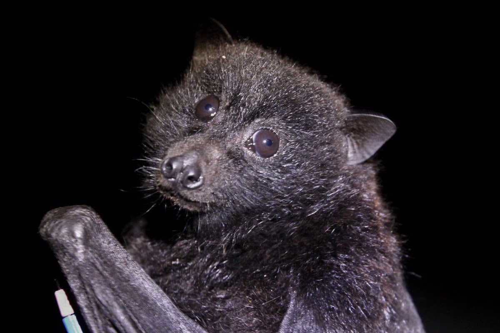

Christmas Island Flying Fox Pteropus natalis The Christmas Island Flying Fox is a large fruit bat native to Christmas Island. Known for its critical role in seed dispersal and pollination, this flying fox is a keystone species in its ecosystem, with its unique black and orange fur making it easily recognizable.

Habitat
The Christmas Island Flying Fox inhabits the tropical rainforests of Christmas Island. They roost in large colonies in trees and caves, often near their food sources. These bats prefer areas with dense foliage that provide protection and food availability.
Diet
The diet of the Christmas Island Flying Fox primarily consists of fruits, nectar, and flowers. They play a vital role in their ecosystem by dispersing seeds and pollinating plants, which helps maintain the health and diversity of their forest habitat.
Conservation Status
The Christmas Island Flying Fox is critically endangered, with populations declining due to habitat destruction, hunting, and disease. Conservation efforts are focused on habitat protection, legal enforcement of hunting bans, and research into disease management.
How to Help
You can help protect the Christmas Island Flying Fox by supporting conservation organizations, advocating for the protection of their natural habitats, and raising awareness about their endangered status. Donations to wildlife conservation groups and volunteering your time to help with local conservation efforts are crucial for their survival.
"Saving Australia's Endangered, Together for a Wilder Future"